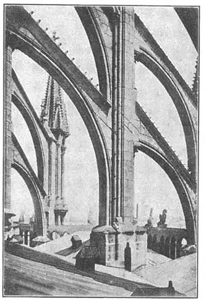

73
POINTING TOWARD HEAVEN
直入云霄的建筑物

NOW I’m going to tell you about a kind of architecture named for some people who never had any architecture. All they ever built was huts. Yet the kind of buildings named for these people is one of the greatest styles of architecture in the world.
That certainly seems strange, doesn’t it?
The people who didn’t know how to build anything but huts were the Goths. The beautiful architecture that the Goths hadn’t anything to do with is called Gothic architecture. Why in the world is it called Gothic architecture, if the Goths didn’t have anything to do with it?
The reason is a strange reason. We think nowadays that Gothic architecture is very wonderful, and we think the Gothic buildings very beautiful. But, strange as it may seem, there were people who despised these beautiful buildings. They thought any architecture that didn’t come from Greece or Rome was no good. They thought it was crude and rough and uncivilized. The crudest, roughest, and most uncivilized people they could think of were the Goths who had conquered Rome, and so they called this beautiful architecture Gothic, not only to show how crude they thought it was, but because they thought the Goths had begun it. Like most bad names, it stuck.
Gothic architecture grew out of the Romanesque architecture. The builders kept trying to make stone ceilings over the naves of the churches because stone was safer from fire than wood was. At first the stone ceiling was a barrel vault, shaped like the side of a barrel. The barrel vault took a great deal of wooden centering to build, because the vault was quite long and each part had to be held up by the centering till all the stones were in place. The centering took so much wood that it was a great discovery when some one found a way of building vaults with very little centering. This discovery was to build two curved ribs like arches or parts of hoops that crossed in the middle of the vault. These two ribs were built first and then the rest of the vault could be put in a little at a time.
Then another discovery was made. This was that a pointed arch was better sometimes than a round arch. It wasn’t really a new discovery, for the people in Asia Minor had used pointed arches for many years. The knights brought the idea back to Europe when they returned from their Crusades in the Holy Land. You might not think such a little thing as making an arch pointed on top instead of round would be important. But important it was, and this is why.
A round arch has to be just as high as it is wide. The wider the opening it has to cover, the higher the round arch has to be. But a pointed arch is different. You can build a pointed arch as high as you want or as low as you want, no matter how wide the opening is that it has to stretch across. If you will put your finger tips together so they form an arch you can prove this. If you keep your hands the same distance apart you can only form one round arch with your fingers. But you can form pointed arches of several different sizes by curving your fingers and keeping your hands still.
The builders of the stone cathedrals found it much easier to build vaults over a wide nave or aisle with pointed arches instead of round arches.
Of course these stone vaults pushed down on the walls and also pushed sideways. So the walls had to be very thick and very well braced with buttresses. But the builders found that when they used ribbed vaults instead of plain barrel vaults, most of the side push came just at the ends of the ribs. They found that if they put heavy buttresses at the ends of the ribs, the rest of the wall could be made very thin. The walls between the buttresses finally became so unnecessary for holding up the roof that they were made of glass. The walls became walls of glass between buttresses of stone.
Not only did the walls get lighter, but the buttresses changed. You couldn’t really say the buttresses learned to fly, but they are called flying buttresses. A flying buttress is one that leans against the wall like a prop—like a man pushing against a wall with a stick. Flying buttresses press against the top of the walls and keep the walls from being pushed over by the weight of the vault and the roof.

No.73 FLYING BUTTRESSES ON A CATHEDRAL IN FRANCE.（法国教堂的飞扶壁）
These three discoveries—the ribbed vault, the walls mostly of glass between buttresses, and flying buttresses—are the three most important things to remember. When these three things had been dis covered, there finally came that beautiful and marvelous kind of architecture known as Gothic—but not because the Goths had anything to do with it, remember.
Gothic architecture was as different from the Greek and Roman as it could be. The Greek and Roman buildings were solidly set on the ground. Almost all the weight pushed straight down. But a Gothic cathedral was a balance of all sorts of thrusts and pushes and forces. Where there was a side push, there was a buttress to push against it.
In the Greek and Roman temples most of the lines ran lengthwise. They were horizontal buildings. The Gothic cathedrals climbed into the air as though reaching up toward heaven. Most of their lines seem to carry the eye upward from the ground. Every part of the building helped to do this. Think of the pointed arch, for one thing. A Gothic cathedral was like a hymn of praise rising to God.
【中文阅读】
下面我要介绍的是一种按某个民族而命名的建筑物，而这个民族却从来谈不上建造过任何建筑物。他们只是盖过小茅屋。然而以这个民族而命名的这种建筑物却展现了世界建筑史上最伟大的建筑风格。
这看起来可真是奇怪，不是吗？
这个除了盖茅屋什么都不会建造的民族叫哥特。而与哥特人毫无关系的漂亮建筑物叫做哥特式建筑。但如果这些建筑物真的与哥特人毫无干系的话，为什么世人都称它为哥特式建筑呢？
理由很奇怪。我们现在认为哥特式建筑都是非常奇妙的，哥特式房屋也是非常好看的。而正如这种建筑风格似乎让人觉得奇怪一样，仍然有人鄙视这些漂亮的建筑。他们认为，只有希腊或罗马风格的建筑才是好的。他们认为哥特式建筑物粗俗、简陋，而又未开化。他们所能想到的最粗鲁、最野蛮，而又最原始的人就是哥特人了，因为他们征服了罗马。他们之所以把这种漂亮的建筑物称作哥特式，不仅表明他们认为这类建筑物是粗俗的，而且还因为他们以为这种建筑风格就是哥特人发起的。正如许多难听的名字一样，它也这样流传下来了。
哥特式建筑是从罗马式建筑发展而来的。工匠们不断尝试用石质天花板覆盖教堂的中殿，因为石头安全性好，比木头防火。起初石质天花板按桶状拱顶建成，形似桶边。建造桶状拱顶需要大量的木质拱鹰架，因为拱顶很长，而且每一部分都要由拱鹰架来固定，直到所有的石块都能各就各位。拱鹰架需要很多木材，但后来有人发现了一种几乎不用拱鹰架的方法，这真是一项伟大的发现。这种方法就是建两根像拱门或铁环一样的曲型拱肋，从正中穿过拱顶。只要先把这两根拱肋建好，拱顶剩下的部分 便可以采取每次一点点的方式来完成。
接下来又是一大发现。那就是尖拱有时比圆拱好。实际上这并不算新的发现，因为小亚细亚人使用尖拱已有好多年了。十字军东征的骑士们从圣地返回后把这个主意带到了欧洲。你们也许会认为像尖拱代替圆拱这么一桩小事没什么重要。可这确实重要。下面我们就来谈谈这是为什么。
圆拱的高度要与它的宽度一样，要覆盖的开口越宽，圆拱也相应地要越高。但尖拱就不同了，在建造尖拱时，你想建高一点可以，想建低一点也可以，它与开口的宽度无关。你可以把指头并在一起做一个拱形来证明这一点。如果你使两只手保持同等距离，那么你只能用指头做成一个圆拱。但你只要把手指弯曲，而两只手保持不动，就可以做出几个不同形状的尖拱。
石质大教堂的建造者发现，在宽阔的中殿或长廊上方建造尖拱要比建造圆拱容易得多。
当然，这些石质圆顶不但挤压墙壁，也挤压侧边。所以墙壁必须要非常厚实，扶壁也要将拱顶箍得紧紧的。但建造者们发现，当他们用带肋拱顶代替普通的桶形拱顶时，大部分的侧边推力都只作用于拱肋的底部，墙壁的其他部分并不需要多么厚实。扶壁之间的墙壁在支撑屋顶时几乎起不到任何作用，它们甚至可以用玻璃制成。石质扶壁之间的墙壁最终演变成了玻璃墙壁。
不仅是墙壁变得更薄了，扶壁也发生了改变。你一般不会真的说扶壁也能学会飞翔，但它们却被称作飞扶壁。飞扶壁就像支柱一样斜靠在墙壁上——就像一个人用手杖抵着墙那样。飞扶壁抵压着墙壁的顶部，并且保证墙壁不会因为拱顶或屋顶的抵压而向外坍塌。
这三大发现——带肋拱顶、扶壁之间的玻璃墙和飞扶壁——是值得纪念的三大重要发现。
正是因为有了这三大发现，才有了以哥特式建筑著称的美丽壮观的建筑风格——但要记住的是，这不是哥特人的发现，因为哥特人跟哥特式建筑毫无关系。
哥特式建筑尽其可能的要不同于希腊式或罗马式建筑，希腊和罗马的建筑都把根基牢牢地建立在大地上。几乎所有的力都在往下作用。但拿一座哥特式大教堂来看，就能发现哥特式建筑将来自各个方向的各种压力在平衡中抵消了。比如有侧压力地方，就会用扶壁来抵消它。
在希腊和罗马的神庙中，几乎所有的线条都是纵向的。它们是水平型建筑。而哥特式大教堂却向上爬升，直冲云霄。大部分线条看起来都似乎要将人的视线从下往上引。建筑物的每一部分都起到了这种作用。首先，让我们回忆一下尖拱吧。哥特式大教堂就像一首献给上帝的赞美诗。